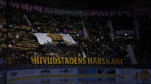

Hovets hjältar
AIK Ishockey är en av Sveriges mest klassiska hockeyföreningar. Med en historia fylld av guld och en publik som aldrig sviker, lever drömmen om nya framgångar vidare.
AIK Ishockey är en av Sveriges mest klassiska hockeyföreningar. Med en historia fylld av guld och en publik som aldrig sviker, lever drömmen om nya framgångar vidare.
Vårt herrlag spelar sina hemmamatcher på anrika Hovet. Här möts tradition och framtid i jakten på en plats i SHL.

Det finns ingen arena i Sverige med samma själ som Hovet. När "Å vi e AIK" dånar mellan väggarna är vi svårstoppade.

AIK har en stolt tradition av att fostra stora talanger som senare tagit klivet till både SHL och NHL.